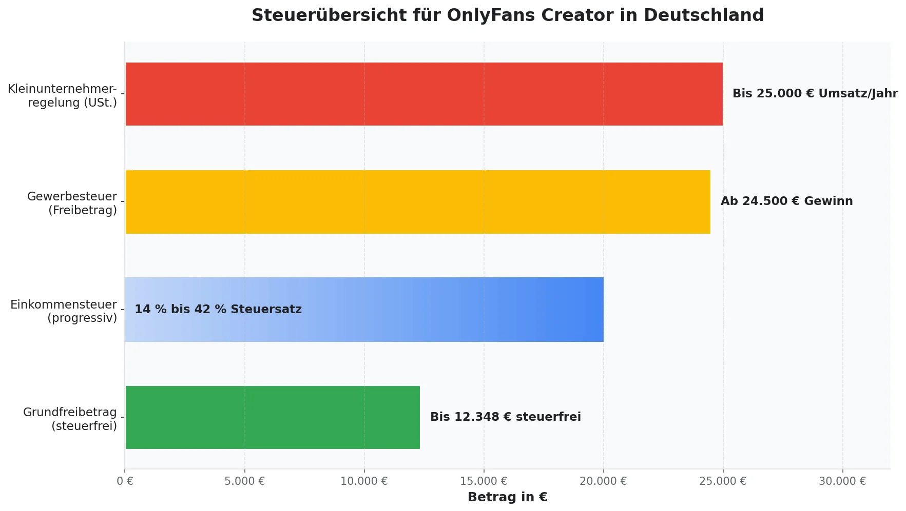
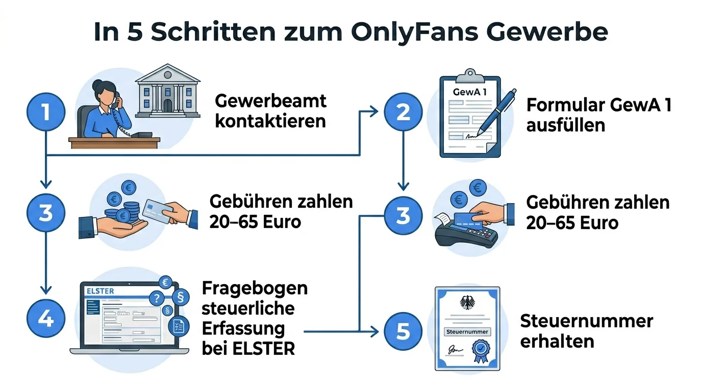

OnlyFans Geld verdienen & Steuern: Gewerbe anmelden, Einkommensteuer, Umsatzsteuer, Kleinunternehmerregelung und absetzbare Betriebsausgaben — Ratgeber für Creator.

OnlyFans Steuern & Gewerbe: Was Creator in Deutschland wissen müssen
Du willst mit OnlyFans Geld verdienen, aber fragst dich, was das Finanzamt dazu sagt? Damit bist du nicht allein. Viele Creator starten voller Motivation auf der Plattform — und vergessen dabei, dass in Deutschland klare steuerliche Pflichten gelten. Wer OnlyFans Einnahmen nicht korrekt versteuert, riskiert Nachzahlungen, Strafen und im schlimmsten Fall ein Verfahren wegen Steuerhinterziehung. In diesem Ratgeber erfährst du alles, was du als OnlyFans Creator in Deutschland über Steuern und Gewerbeanmeldung wissen musst — von der ersten Anmeldung bis zu den Betriebsausgaben, die deine Steuerlast senken.

OnlyFans Gewerbe anmelden: Wann und wie?
Ab wann muss ich ein Gewerbe anmelden?
Sobald du mit OnlyFans Geld verdienen möchtest, musst du in Deutschland ein Gewerbe anmelden. Das gilt ab dem ersten Euro Einnahmen. Die Content-Erstellung auf OnlyFans wird vom Finanzamt als gewerbliche Tätigkeit eingestuft — nicht als freiberufliche Tätigkeit. Eine Gewerbeanmeldung ist deshalb Pflicht, ganz egal wie viel du verdienst.

So meldest du dein OnlyFans Gewerbe an
Gehe zum Gewerbeamt deiner Stadt oder Gemeinde. In vielen Städten geht das inzwischen auch online.
Du benötigst deinen Personalausweis und füllst das Formular GewA 1 aus. Als Tätigkeit gibst du z. B. „Content-Erstellung und Online-Dienstleistungen" an.
Die Anmeldung kostet je nach Gemeinde zwischen 20 und 65 Euro.
Nach der Gewerbeanmeldung bekommst du vom Finanzamt den Fragebogen zur steuerlichen Erfassung. Diesen füllst du über ELSTER (das Online-Portal des Finanzamts) aus.
Das Finanzamt teilt dir anschließend eine Steuernummer zu.
Nach der Anmeldung bist du automatisch auch Pflichtmitglied in der IHK (Industrie- und Handelskammer). Der Mindestbeitrag liegt bei rund 30 bis 50 Euro pro Jahr — bei geringen Einnahmen oft sogar beitragsfrei.
OnlyFans Einnahmen versteuern: Welche Steuern fallen an?
Wenn du mit OnlyFans Geld verdienst, musst du deine Einnahmen versteuern. Grundsätzlich sind drei Steuerarten relevant:
1. Einkommensteuer
Die Einkommensteuer ist die wichtigste Steuer für OnlyFans Creator. Alle Einnahmen aus deiner Creator-Tätigkeit — Abos, Tips, Pay-per-View-Content, Nachrichten — zählen als Einkünfte aus Gewerbebetrieb.
Grundfreibetrag 2025/2026: Du zahlst erst Einkommensteuer, wenn dein zu versteuerndes Einkommen den Grundfreibetrag übersteigt. Dieser liegt bei:
- 2025: 12.096 Euro
- 2026: 12.348 Euro
Liegt dein Gesamteinkommen darunter, fällt keine Einkommensteuer an. Aber Achtung: Eine Steuererklärung musst du trotzdem abgeben, sobald du gewerbliche Einkünfte hast.
Der Steuersatz ist progressiv — er steigt mit dem Einkommen. Er beginnt bei 14 % und kann bis auf 42 % steigen (ab ca. 67.000 Euro zu versteuerndem Einkommen).
2. Umsatzsteuer
Die Umsatzsteuer (auch Mehrwertsteuer) beträgt in Deutschland 19 %. Bei OnlyFans gibt es allerdings eine Besonderheit: OnlyFans sitzt in Großbritannien, und die Plattform führt die Umsatzsteuer im sogenannten Reverse-Charge-Verfahren ab. Das bedeutet, dass OnlyFans die Umsatzsteuer für Transaktionen innerhalb der EU selbst abführt.
Für dich als Creator heißt das: Auf deine reinen OnlyFans-Einnahmen musst du in der Regel keine zusätzliche Umsatzsteuer abführen. Hast du aber weitere Einnahmequellen (z. B. Kooperationen, eigener Merchandise, Beratung), kann Umsatzsteuer anfallen.
3. Gewerbesteuer
Gewerbesteuer fällt erst ab einem jährlichen Gewinn von 24.500 Euro an. Darunter bist du komplett befreit. Und selbst wenn du über dieser Grenze liegst: Die gezahlte Gewerbesteuer wird teilweise auf deine Einkommensteuer angerechnet, sodass die effektive Belastung bei den meisten Creatorn gering ausfällt.
Kleinunternehmerregelung: Lohnt sie sich für OnlyFans Creator?
Die Kleinunternehmerregelung nach § 19 UStG befreit dich von der Pflicht, Umsatzsteuer auszuweisen und abzuführen. Seit 2025 gelten neue Grenzen:
- Dein Umsatz im Vorjahr lag unter 25.000 Euro
- Dein Umsatz im laufenden Jahr wird voraussichtlich 100.000 Euro nicht überschreiten
Wann ist die Kleinunternehmerregelung sinnvoll?
Da OnlyFans die Umsatzsteuer im Reverse-Charge-Verfahren bereits abführt, ist die Kleinunternehmerregelung für reine OnlyFans-Einnahmen weniger entscheidend als bei anderen Selbstständigen. Sie wird aber relevant, wenn du:
- Zusätzliche Einnahmen hast (Instagram-Kooperationen, Merchandise, Coaching)
- Wenig Betriebsausgaben hast, bei denen du Vorsteuer geltend machen könntest
- Bürokratie minimieren möchtest
Wann solltest du auf die Regelung verzichten?
Wenn du hohe Betriebsausgaben mit Umsatzsteuer hast (z. B. teure Kamera-Ausrüstung, Studio-Miete, Agenturgebühren), kann es sich lohnen, auf die Regelung zu verzichten. Dann darfst du die gezahlte Vorsteuer vom Finanzamt zurückfordern — das kann bei größeren Investitionen mehrere Hundert bis Tausend Euro ausmachen.
Anonym auf OnlyFans Geld verdienen — geht das steuerlich?
Viele Creator möchten auf OnlyFans anonym Geld verdienen und ihre bürgerliche Identität schützen. Die gute Nachricht: Anonymität gegenüber deinem Publikum und steuerliche Pflichten schließen sich nicht aus.
Was möglich ist
- Künstlername auf der Plattform — Du kannst auf OnlyFans unter einem Pseudonym arbeiten. Dein bürgerlicher Name wird Followern nicht angezeigt.
- Geschäftsadresse nutzen — Statt deiner Privatadresse kannst du eine Geschäftsadresse oder ein virtuelles Büro für deine Gewerbeanmeldung verwenden. Anbieter gibt es ab ca. 30 Euro pro Monat.
- Separate Konten — Nutze ein separates Geschäftskonto für alle OnlyFans-Einnahmen. Viele Online-Banken bieten kostenlose Geschäftskonten an.
Was du beachten musst
Gegenüber dem Finanzamt kannst du nicht anonym bleiben. Das Finanzamt kennt deinen echten Namen und deine Adresse — das ist gesetzlich vorgeschrieben.
Die Anonymität gegenüber der Öffentlichkeit bleibt also gewahrt — gegenüber den Behörden nicht. Und das ist auch richtig so, denn nur so kannst du rechtssicher arbeiten.
Betriebsausgaben: Diese Kosten kannst du absetzen
Betriebsausgaben senken deinen steuerpflichtigen Gewinn und damit deine Steuerlast. Als OnlyFans Creator kannst du eine Vielzahl von Ausgaben geltend machen:
Equipment und Technik
- Kamera, Objektive, Beleuchtung
- Smartphone (anteilig, wenn auch privat genutzt)
- Computer oder Laptop
- Stativ, Mikrofon, Ringlichter
- Software für Bild- und Videobearbeitung (z. B. Adobe-Abo)
Raum- und Nebenkosten
- Arbeitszimmer — Anteilige Miet- und Nebenkosten bei separatem Raum
- Homeoffice-Pauschale — 6 Euro pro Tag (max. 1.260 Euro pro Jahr)
Laufende Kosten
- Internetkosten (anteilig oder voll, je nach Nutzung)
- Handy-Vertrag (anteilig)
- Cloud-Speicher und Backup-Dienste
- Requisiten und Dekoration für Content
Marketing und Wachstum
- Werbeanzeigen (Instagram, TikTok, Reddit)
- Shoutouts und Cross-Promotion
- Social-Media-Management-Tools
Professionelle Dienstleistungen
Steuerberater: Die Kosten für einen Steuerberater sind vollständig absetzbar — und bei wachsenden Einnahmen fast immer eine lohnende Investition.
OFM-Agentur: Wenn du mit einer OnlyFans Management Agentur zusammenarbeitest, sind die Agenturgebühren vollständig als Betriebsausgabe absetzbar. Eine professionelle Agentur wie Venus Manager übernimmt dabei nicht nur Marketing und Wachstumsstrategie, sondern hilft auch dabei, den gesamten Business-Teil professionell aufzustellen.
Häufige Steuerfehler, die OnlyFans Creator machen
Gerade am Anfang passieren schnell Fehler, die später teuer werden können. Hier sind die häufigsten:
Manche Creator verdienen monatelang Geld, ohne ein Gewerbe angemeldet zu haben. Das kann zu empfindlichen Nachzahlungen führen — dank DAC7 entdeckt das Finanzamt die Einnahmen fast sicher.
Alle Einnahmen müssen in der Steuererklärung stehen — auch Tips, Trinkgelder und Pay-per-View-Einnahmen.
Als Selbstständige*r bekommst du dein Geld brutto ausgezahlt. Faustregel: Lege 25 bis 30 Prozent deiner Einnahmen für Steuern zurück.
Wer keine Belege sammelt, verschenkt bares Geld. Jede nicht dokumentierte Ausgabe erhöht deinen steuerpflichtigen Gewinn.
Abgabefrist: 31. Juli des Folgejahres. Wer die Frist verpasst, zahlt mindestens 25 Euro Verspätungszuschlag pro Monat.
Führe ein separates Geschäftskonto. Gemischte Transaktionen machen die Buchführung zum Alptraum — und das Finanzamt misstrauisch.
Fazit: OnlyFans und Steuern müssen nicht kompliziert sein
Geld verdienen mit OnlyFans ist in Deutschland absolut legal — solange du deine steuerlichen Pflichten erfüllst. Die wichtigsten Schritte zusammengefasst:
Vor den ersten Einnahmen, beim Gewerbeamt deiner Stadt.
Online über ELSTER ausfüllen.
Belege aufbewahren — mindestens 10 Jahre.
Mindestens 25–30 % für Steuern zurücklegen.
Idealerweise mit Steuerberater.
Als OnlyFans Creator musst du dich um viele Dinge gleichzeitig kümmern: Content-Erstellung, Community-Management, Marketing — und eben auch den gesamten Business- und Steuerbereich. Genau hier kann eine professionelle OnlyFans Agentur den Unterschied machen.
Venus Manager unterstützt Creator als erfahrene OFM-Agentur nicht nur bei Marketing und Wachstum, sondern hilft dir auch dabei, den geschäftlichen Rahmen von Anfang an richtig aufzusetzen. So kannst du dich auf das konzentrieren, was du am besten kannst — großartigen Content erstellen.
Du möchtest mehr darüber erfahren, wie du als Creator auf OnlyFans erfolgreich startest? Dann lies unseren ausführlichen Guide: OnlyFans starten — Der komplette Leitfaden.
Häufige Fragen zu OnlyFans Steuern und Gewerbe (FAQ)
Steuern im Griff — Content im Fokus
Du möchtest dich auf großartigen Content konzentrieren, statt dich mit Steuerformularen herumzuschlagen? Als erfahrene OFM-Agentur helfen wir dir, den gesamten Business-Teil professionell aufzusetzen.
Kostenloses Erstgespräch buchen